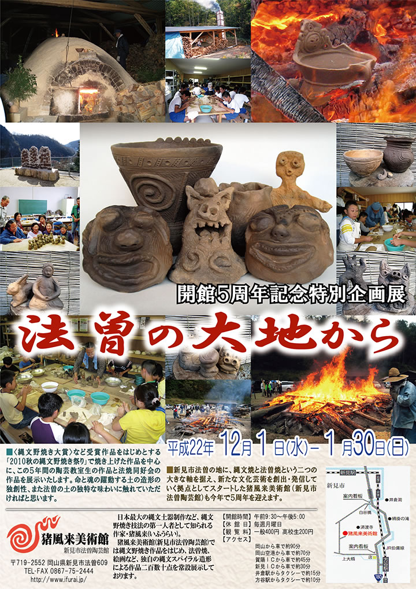
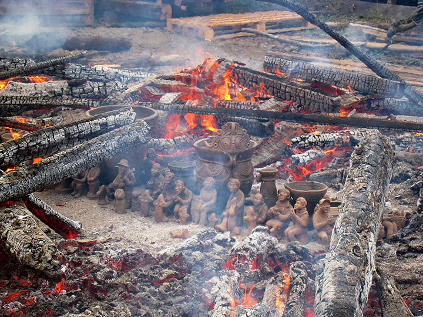

|  |
| 【開館５周年記念特別企画展『法曽の大地から』チラシ】 →PDF版を開く |
新見市法曽の地に、縄文焼と法曽焼という２つの大きな軸を据え、新たな文化芸術を創出・発信していく拠点と
してスタートした猪風来美術館（新見市法曽陶芸館）も、今年11月で５周年を迎えます。
陶芸体験や陶芸教室に参加してくれた人たちも、新見市をはじめ岡山県内のみならず香川や広島、島根、大阪、
東京と広範囲に広がっています。
美術館恒例行事の春と秋の縄文野焼き祭りも各々５回目を迎え、陶芸教室に参加して縄文野焼きに挑戦する人たち
の作品も、質・量ともに充実したものになってきました。
何度も通ってきて技量を身につけた人の作品、子供らしい豊かな発想の楽しい作品など、どれも独創性溢れる
素晴らしいできばえ。この世の豊饒としあわせを祈る、命と魂の躍動する縄文文様ならではの力です。
開館５周年を記念して、今回から焼き上がった作品を対象に〈縄文野焼き大賞〉など４賞が選ばれました。
=∴=∵=∴=∵=∴=∵=∴=∵=∴=∵=∴=∵=∴=∵=∴=∵=∴=∵=∴=∵=∴=∵=∴=∵=∴=∵=∴=
また江戸後期頃途絶えて以来「幻の法曽焼」といわれてきたこの地の古来の焼物があります。
猪風来美術館（法曽陶芸館）の開館を期に、法曽焼同好会が結成され、猪風来の指導のもと復興の試みが開始
されました。
土や製作法、焼成法の解明がなされ 法曽焼のための穴窯建設を行い、2007年12月に焼締めの法曽焼水甕が、
2009年2月には磁器・施釉による遠州法曽の茶器が焼き上がり、150年ぶりの法曽焼復活が成し遂げられました。
地元の土を用い地域の伝統を受け継いだ法曽焼の作品も、新しい文化として今後の更なる可能性・発展が期待
されます。
=∴=∵=∴=∵=∴=∵=∴=∵=∴=∵=∴=∵=∴=∵=∴=∵=∴=∵=∴=∵=∴=∵=∴=∵=∴=∵=∴=
この企画展では〈縄文野焼き大賞〉など受賞作品をはじめとする「2010秋の縄文野焼き祭り」で焼き上げた
作品を中心に、この５年間の陶芸教室生の作品と法曽焼同好会の作品を展示いたします。
猪風来流陶芸指導による命と魂の躍動する土の造形の独創性、また法曽の土の独特な味わいに触れていただ
ければと思います。
|  |
| 【「2010秋の縄文野焼き祭り」にて焼き上がった作品】 |